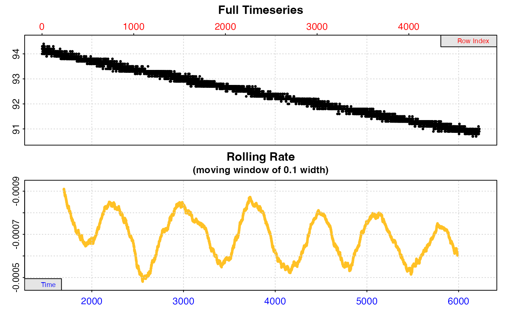
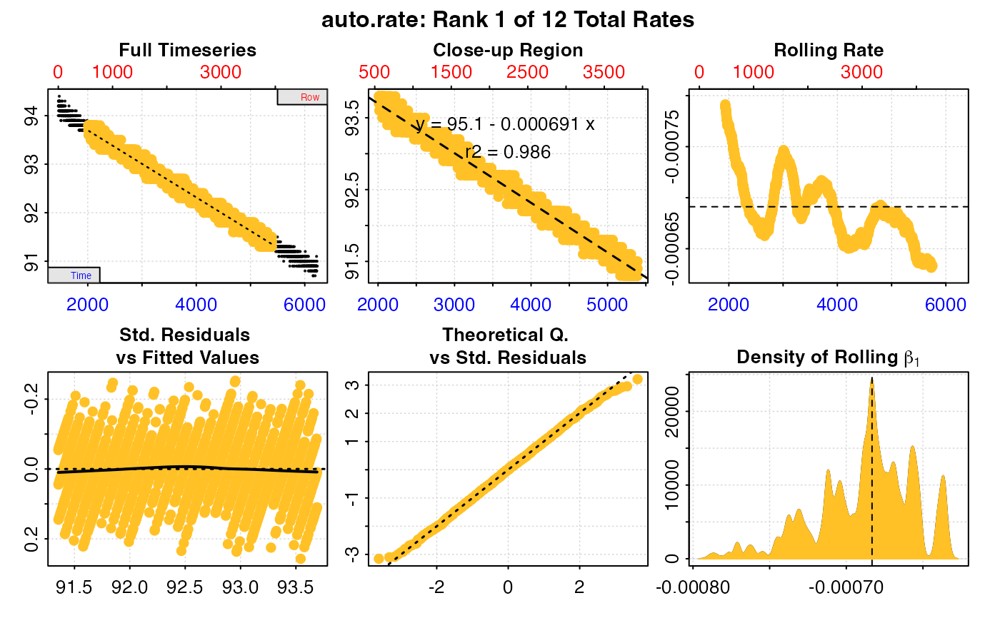

subset_data subsets a data.frame, inspect, or inspect.ft object based
on a given set of criteria. The function is ideal for passing only selected
regions of data to other functions such as calc_rate() and
auto_rate(), either by saving the output as a new object or via the use
of pipes (%>% or %>%). It is also very useful in analysis of
intermittent-flow data, where in a loop each replicate can be extracted and
passed to an analytical function such as calc_rate or auto_rate. See
examples and vignettes.
Arguments
- x
data.frame,inspect, orinspect.ftobject. The data from which to produce a subset.- from
numeric. The lower bounds of the subset based on the
byinput.- to
numeric. The upper bounds of the subset based on the
byinput.- by
string.
"time","row", or"oxygen". Method by which to apply thefromandtoinputs.- quiet
logical. Controls if a summary of the output is printed to the console. Default is
TRUE.
Value
Output: If the input is an inspect, or inspect.ft object, the
output is an object of the same class containing the subset data. For
data.frame inputs the output is a data.table of the subset.
Details
The function can subset data based on ranges of "time", "oxygen", or
"row". For data frames, to subset by "time" or "oxygen" the time data
is assumed to be in the first column, and oxygen data in the second column.
For inspect() and inspect.ft() objects, the data will have been
coerced to this structure already. In these cases the $dataframe element in
the output is replaced by the subset, and in inspect.ft the $data element
is also subset and replaced. Note for inspect.ft objects, the oxygen data
in column 2 will be either out.oxy data or delta.oxy data depending on
what was inspected. The function can subset any data frame by row.
When multiple columns are present, for example time in column 1, and multiple
columns of oxygen data, the subset object will include all columns. In the
case of subsetting by = "oxygen", subsetting is based on the first column
of oxygen data only (i.e. column 2), and all subsequent columns are subset
between the same rows regardless of oxygen values.
For all methods, if exact matching values of from and to are not present
in the data, the closest values are used. For "time" and "row"
subsetting, from and to should be in the correct order. No warning or
messages are given if the input values are outside those in the data frame.
For instance, if to = 100 and there are only 50 rows in the data, the last
row (50) will be used instead. The same for from and to time values
outside those in the data frame.
For "oxygen" subsetting, from and to are generally interchangeable, and
the function will subset data between the first and last occurrences (or
closest occurrences) of these values. It works best with generally increasing
or decreasing oxygen data, and results may vary with other data such as
intermittent flow data or those in inspect.ft objects.
Note for inspect and inspect.ft object inputs: after subsetting the
locations of any data issues highlighted when the object was originally
inspected will no longer be accurate. If these are important, best practice
is to subset the original dataframe, and then process the subset through
inspect or inspect.ft.
A summary of the subset can be printed to the console if the default quiet = FALSE is changed to TRUE.
More
For additional help, documentation, vignettes, and more visit the respR
website at https://januarharianto.github.io/respR/
Examples
# \donttest{
# Subset by time:
x <- subset_data(squid.rd, from = 2000, to = 4000, by = "time")
# Subset by oxygen:
subset_data(sardine.rd, from = 94, to = 91, by = "oxygen")
#> subset_data: Multi-column dataset detected in input!
#> subset_data is generally intended to subset data already passed through inspect(), or 2-column data frames where time and oxygen are in columns 1 and 2 respectively.
#> Subsetting will proceed anyway based on this assumption, but please ensure you understand what you are doing.
# Subset by row:
subset_data(flowthrough.rd, from = 10, to = 750, by = "row")
#> subset_data: Multi-column dataset detected in input!
#> subset_data is generally intended to subset data already passed through inspect(), or 2-column data frames where time and oxygen are in columns 1 and 2 respectively.
#> Subsetting will proceed anyway based on this assumption, but please ensure you understand what you are doing.
# Subset multiple columns:
# In this case subsetting is based on the first two columns
subset_data(flowthrough.rd, from = 50, to = 600, by = "time")
#> subset_data: Multi-column dataset detected in input!
#> subset_data is generally intended to subset data already passed through inspect(), or 2-column data frames where time and oxygen are in columns 1 and 2 respectively.
#> Subsetting will proceed anyway based on this assumption, but please ensure you understand what you are doing.
# Pass (via piping) only a subset of a dataset to inspect() and auto_rate()
subset_data(sardine.rd, from = 94, to = 91, by = "oxygen") %>%
inspect(time = 1, oxygen = 2) %>%
auto_rate()
#> subset_data: Multi-column dataset detected in input!
#> subset_data is generally intended to subset data already passed through inspect(), or 2-column data frames where time and oxygen are in columns 1 and 2 respectively.
#> Subsetting will proceed anyway based on this assumption, but please ensure you understand what you are doing.
#> inspect: No issues detected while inspecting data frame.
#>
#> # print.inspect # -----------------------
#> Time Oxygen
#> numeric pass pass
#> Inf/-Inf pass pass
#> NA/NaN pass pass
#> sequential pass -
#> duplicated pass -
#> evenly-spaced pass -
#>
#> -----------------------------------------

#> auto_rate: Applying default 'width' of 0.2

#>
#> # print.auto_rate # ---------------------
#> Data extracted by 'row' using 'width' of 953.
#> Rates computed using 'linear' method.12 linear regions detected in the kernel density estimate.
#> To see all results use summary().
#>
#> Position 1 of 12 :
#> Rate: -0.0006911336
#> R.sq: 0.986
#> Rows: 554 to 3935
#> Time: 2011 to 5392
#> -----------------------------------------
# }